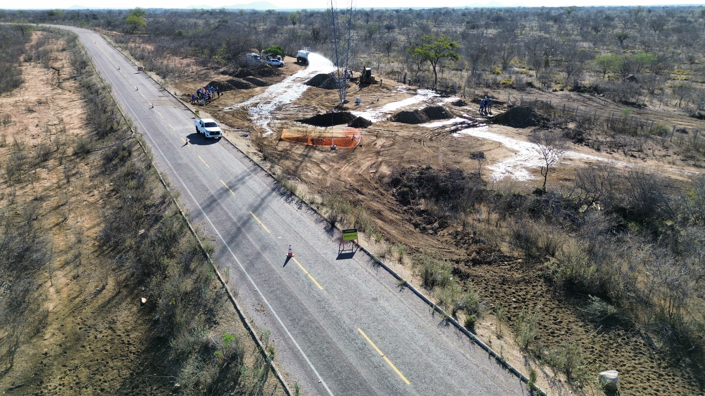
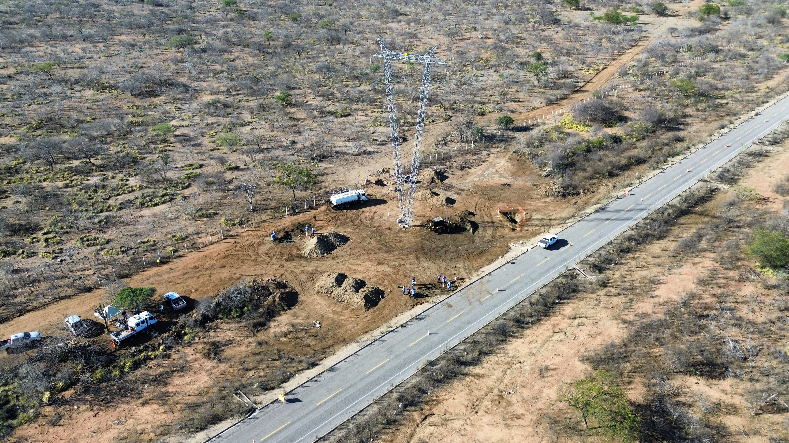

Pular para o conteúdo
Sinalização no entorno da torre e da via
início
seções
slide atual
Sinalização instalada


Vista aérea com uso de drone
Seu navegador não suporta vídeo nativamente.
Baixar o vídeo
.
Vista aérea da sinalização no entorno da torre e da via